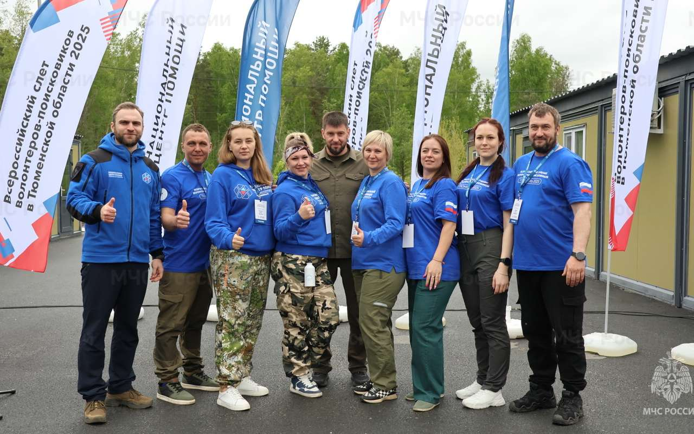
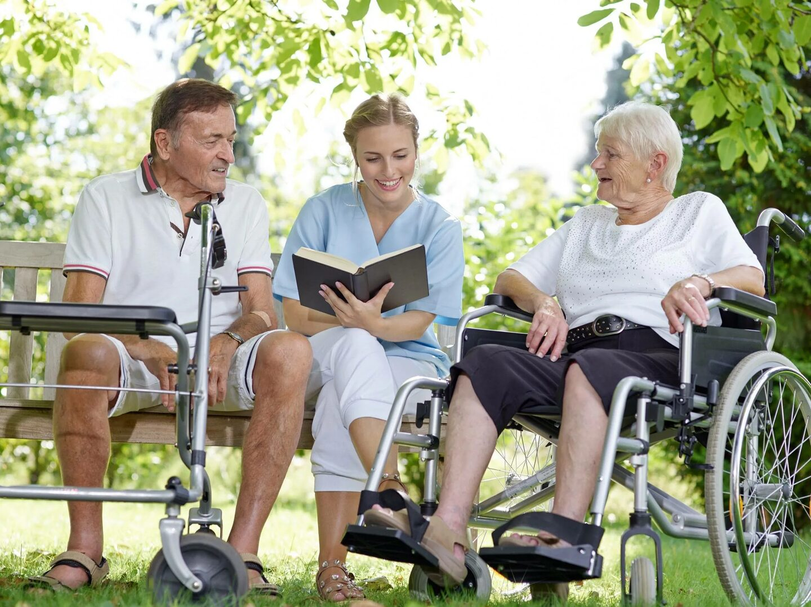
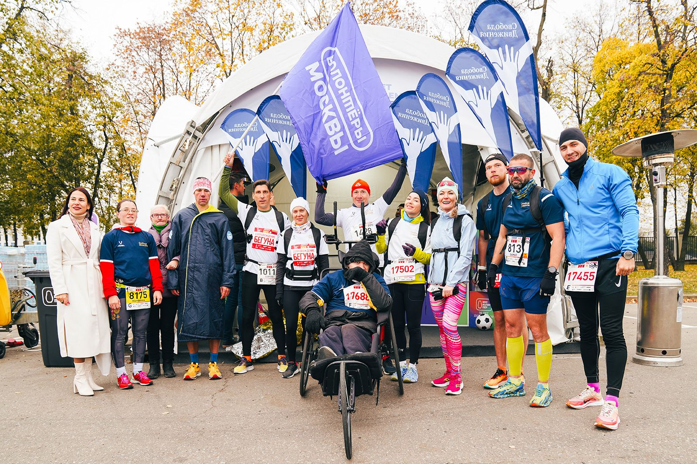

Добровольчество в городе
Студенты, которые помогают людям, экологии и городским событиям
Landing Page знакомит с направлениями Мосволонтера, показывает ближайшие мероприятия и позволяет быстро записаться в качестве добровольца. Страница сделана с акцентом на понятную структуру, сине-фиолетовую палитру и удобный интерактив.
4 направления
социальные, образовательные, экологические и событийные проекты
4 мероприятия
каждое с датой, адресом, возрастом и кнопкой записи
1 минута
чтобы открыть форму и отправить заявку
Направления работы
Четыре направления, в которых студент может включиться уже сейчас
Каждое направление сопровождается кратким описанием, изображением и модальным окном с более подробной информацией.

Социальное волонтерство
Помощь пожилым людям, сопровождение подопечных и участие в добрых акциях рядом с домом.

Образовательные проекты
Наставничество, занятия, помощь в проведении мастер-классов и просветительских встреч.

Экологические акции
Субботники, посадки, сбор вторсырья и простые городские инициативы с видимым результатом.

Событийное сопровождение
Форумы, фестивали, спортивные и культурные события, где важна организованность и энергия команды.
Ближайшие мероприятия
Четыре события, на которые можно подать заявку
У каждого мероприятия есть краткое описание, адрес, дата проведения и возрастной порог для волонтера.
Форум добрых дел
Команде нужны волонтеры, которые помогут встречать участников, выдавать материалы и сопровождать посетителей по площадке.
Инклюзивный спортивный день
Волонтеры сопровождают команды, помогают на старте активностей и создают дружелюбную атмосферу на спортивной площадке.
Городская эко-суббота
Участники помогают очищать зону отдыха, сортировать собранные материалы и высаживать молодые растения вместе с кураторами.
Весенний марафон наставничества
Студенты помогают организовать зоны общения, сопровождать гостей и поддерживать темп образовательной программы в течение дня.
Прошедшие события
Анимированная галерея с моментами волонтерской работы
Карточки плавно реагируют на наведение, а по клику открываются в увеличенном виде.
Карта площадок
Площадки мероприятий на интерактивной карте
Выберите карточку события слева - карта обновится и покажет нужную точку проведения.